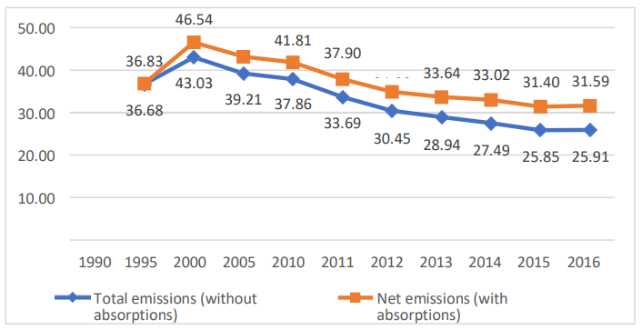

In accordance with decision No. 1/CP.21, paragraph 24, adopted at the Conference of the Parties to the United Nations Framework Convention on Climate Change (COP21), the Republic of Azerbaijan provides an updated version of its “Nationally Determined Contributions (NDCs)” document, as well as additional information on contributions to ensure clarity and transparency on the basis of decision No. 4/CMA.1 of the Conference of the Parties (COP24).
As agreed at the Conference of the Parties in Paris (COP21), all party states, regardless of their level of development and political objectives, shall mobilise more intensively to take urgent actions for achieving the goals of the Paris Agreement.
According to the 6th Assessment Report of the Intergovernmental Panel on Climate Change (IPCC), global temperatures will continue to rise until at least the middle of this century under all scenarios considered for emissions. Moreover, global warming will exceed 1.5°C or 2°C in the 21st century unless drastic reductions in emissions of carbon dioxide (CO2) and other greenhouse gases (GHGs) are achieved in the coming decades.
The Republic of Azerbaijan actively participates in the implementation of the United Nations Framework Convention on Climate Change (UNFCCC), the Kyoto Protocol and the Paris Agreement.
In accordance with Article 4 of the Paris Agreement, the Republic of Azerbaijan has introduced its Nationally Determined Contributions (NDC) to the UNFCCC Secretariat in October 2015 and as a contribution to initiatives for preventing global climate change (mitigation initiatives) compared to 1990 (base year) aims to reduce greenhouse gas emissions by 35% by 2030.
Since then, the evaluation of the policies pursued by the government and the assessment of the measures taken has created an opportunity to propose a higher target to the government of Azerbaijan. Taking into account the new realities after the liberation of about 20 percent of the country's territories from a 30-year occupation and strategic socio-economic development programmes, national circumstances, especially the plans for diversification of the economy over the next decade, the proposed GHG emission reduction target by 2030 in Azerbaijan's Nationally Determined Contribution document is quite ambitious.
Azerbaijan plans to take part in reducing the environmental impact on the basis of its NDC document, primarily through its domestic capacities and has, nevertheless, taken important steps in international cooperation in accordance with Article 6 of the Paris Agreement.
The new version of Azerbaijan's Nationally Determined Contributions by 2050 includes the following elements:
|
Azerbaijan's Nationally Determined Contributions by 2050 were renewed in 2023. |
|
The Republic of Azerbaijan, subject to its sustainable socio-economic development, will seek to reduce greenhouse gas emissions by 40% compared to 1990 (base year) level by 2050 if international support is provided through financing, technology transfer and capacity building. |
|
As per the instructions outlined in the decision 4/CMA. |
|
|
Quantitative data as of the reference date (including base year, if applicable): |
|
|
Reference (base) year |
1990 |
|
Quantitative data as of the reference date |
In the 4th National Communication of Azerbaijan, the total volume of greenhouse gas emissions for the reporting year (taking into account the absorption volume in the land use, land-use change and forestry (LULUCF) sector) is assumed to be 79 Mt of CO2 equivalent*1 |
|
Objective regarding numerical reference |
Reduction of greenhouse gas emissions by up to 40% compared to 1990 level, taking into account the maximum absorption capacity of forests and other ecosystems. |
|
Conditions for changing reference indicators |
Total greenhouse gas emissions into the atmosphere can be updated and recalculated through methodological improvements. Updates will be included in the next Biennial Update Report or Biennial Transparency Report and National Communication. |
|
Deadlines and/or terms for execution: |
|
|
The deadlines and/or terms for execution, as well as the start and end date, in accordance with any relevant decision made at the Conference of the Parties of the Paris Agreement |
From 1 January 2023 to 31 December 2050. |
|
Consideration of paragraphs 31 (c) and (d) of decision 1/CP.21 by the country |
In its 4th National Communication, Azerbaijan recorded updated information on sources included in the greenhouse gas inventory. Information on greenhouse gas emissions into the atmosphere from sources that have not been accounted for due to lack of data will be included in the reports after restructuring of the Monitoring, Reporting and Verification (MRV) system in accordance with the requirements of the improved transparency format specified in Article 13 of the Paris Agreement. If air emissions from these sources are significant, i.e., if they are considered a key emission sector, Azerbaijan will provide relevant clarifying information on these emissions in the next reports to the UNFCCC Secretariat. |
|
Scale and scope: |
|
|
General description of the target |
Target covering all sectors |
|
The Nationally Determined Contributions includes sectors, gases, benchmarks and areas including, where applicable, sectors under Guidelines of the Intergovernmental Panel on Climate Change. |
The target includes:
|
Detailed technical studies were carried out to develop an updated “Nationally Determined Contributions” document, including an assessment of energy efficiency potential, economic growth, national circumstances and challenges in the economy of Azerbaijan. Relevant studies were conducted in cooperation with all stakeholders, the academic sector and technical consultants.
In order to update the “Nationally Determined Contributions” document, taking into account the gender considerations, a public consultation process with the involvement of civil society was conducted in accordance with government procedures.
Considering the needs of youth and vulnerable groups, local support will be provided for the implementation of the updated Nationally Determined Contributions by attracting the local population based on gender criteria and encouraging all stakeholders and NGOs to take action.
The Government of Azerbaijan has a political will in achieving the goals set out in the Nationally Determined Contributions, including regular consultations with all stakeholders, scientists and other participants and poesesses appropriate transparency mechanisms in the realisation of the target. In addition, Azerbaijan has a State Commission on Climate Change to ensure the implementation and monitoring of nationally determined contributions. For the purpose of achieving the goals set out in this document, the Commission acts as an intermediary in ensuring transparency of climate policy implementation.
Draft “State Programme on Low Emission Development”, which will be developed in addition to the updated Nationally Determined Contributions, will indetify new sectoral emissions reduction strategies. The relevant long-term planning until 2050 will be carried out within the framework of this programme.
By ratifying the UN Framework Convention on Climate Change, the Kyoto Protocol to the Convention and the Paris Agreement, the Republic of Azerbaijan has joined the international efforts to mitigate the negative impact of global climate change.
Currently, the obligations of the Republic of Azerbaijan arising from the Paris Agreement and their implementation is one of the priorities of the Government of
Azerbaijan. In general, the main objective of the response measures taken by states under the Paris Agreement is to maintain global temperature growth at an average rate of less than 2°C by the end of the century.
According to the relevant data, the downward trend in the net emission level compared to the 1990 has decreased since 2000 and by 2016 (last year of inventory) changed from 46.54% to 31.59% (Table 1).

In 1997, the President of the Republic of Azerbaijan signed a decree on the establishment of the State Commission on Climate Change to fulfil country’s obligations under the UNFCCC. The new composition of the State Commission was approved by the Decree of the President of the Republic of Azerbaijan dated 11 March 2020. The Chairman of the State Commission is the Deputy Prime Minister of the Republic of Azerbaijan. The Deputy Chairman of the Commission is the Minister of Ecology and Natural Resources of the Republic of Azerbaijan.
Taking into account the active role of the relevant state bodies in this process, the importance of strengthening interdepartmental relations and the significance of the State Commission in ensuring the fulfilment of the commitments undertaken by the Republic of Azerbaijan within the framework of the UNFCCC, a working group of specialists from relevant state bodies was established. The action plan of the working group was approved in 2020. The Ministry of Ecology and Natural Resources is carrying out important intersectoral activities to coordinate events.
In order to revitalise the territories liberated from occupation, the country's leadership has taken a number of important decisions regarding the implementation of approaches of the “green energy” zone, “green” agriculture, “green” transport, “smart” city, “smart” village and reforestation of thousands of hectares of land. Large-scale works are being carried out in the above mentioned areas in this respect. With the expert support of international consultants, it is planned to prepare a concept of a “Net Zero Emissions” zone in the liberated territories by 2050.
Moreover, a technical assistance project “Capacity building for Azerbaijan to meet the requirements of enhanced transparency framework of the Paris Agreement (CBIT)” is being implemented in order to establish a national GHG management system and tracking system of the implementation of Nationally Determined Contributions.
Meanwhile, the Republic of Azerbaijan joined Transforming our World: the 2030 Agenda for Sustainable Development and commenced the process of implementation of the Sustainable Development Goals.
In recent years, economic mechanisms have been widely used to reduce the impact of climate change and different steps have been taken to encourage innovative investments, to create special economic zones, industrial parks, etc. in Azerbaijan for the promotion of the import of green technologies. Resident companies of these industrial parks and zones have been granted a number of privileges by the state. In accordance with the Tax Code of the Republic of Azerbaijan and the Law of the Republic of Azerbaijan "On Customs Tariff”, residents of industrial parks are exempted from property tax, land tax, income or profit tax, VAT and customs duties when importing machines, technological equipment and devices imported for production purposes for a period of 10 years from the date of their registration.
The Republic of Azerbaijan has favourable natural and climatic conditions and is rich in natural resources. Oil and gas production, chemistry and petrochemistry, metallurgy, machine building, textile industry, food production, agriculture, plant growing, cotton growing, viticulture, fruit growing, tobacco growing, tea growing, etc. play an important role in the country's economy.
A lot of measures have been taken to develop the economy, improve the investment and business environment, create favourable conditions for entrepreneurs, increase state support, expand non-oil exports and import substitutions. At the same time, Azerbaijan improved its position in the ranking by 8 notches, from 65th to 57th, among 190 countries in the “Doing Business 2018” report issued by the World Bank. According to this report, Azerbaijan was among the top three most reforming countries in Europe and Central Asia. In the World Bank's “Doing Business 2020” report, Azerbaijan advanced to the 34th notch.
Compared to 2020, GDP in 2021 increased by 5.6% in real terms and amounted to 93.20 billion manats at current prices. Real GDP per capita increased by 5.1% and comprised AZN 9,303.80 or USD 5,472.80 (USD 4,280.8 for the same period of the previous year). In 2022, the country produced gross domestic product of 133.8 billion manats, which is 4.6% more than in the previous year. GDP per capita amounted to 13,292.20 manats.
Taking into account the greenhouse gas inventory data and GDP dynamics in 1990-2016, it is possible to note the considerable growth in greenhouse gas emissions in relation to GDP in 1990-2014, as well as a steady growth in recent years. Azerbaijan's updated “Nationally Determined Contributions” document envisages a number of criteria affecting the country's GHG emissions: e.g., rapid GDP growth rate since 2004, demographic growth, investments, energy sector prices, technological progress, energy consumption, behaviour and habits and so on.
|
year |
1990 |
1995 |
2000 |
2005 |
2010 |
2011 |
2012 |
2013 |
2014 |
2015 |
2016 |
|
Kt CO2 equ/mln dollar |
32.33 |
20.66 |
8.01 |
3.39 |
0.87 |
0.74 |
0.74 |
0.71 |
0.70 |
1.02 |
1.43 |
Moreover, with regard to the new goal of doubling GDP in Azerbaijan by 2030 based on the new 10-year development plan, which requires an average annual GDP growth of 7%, the country should implement a number of preventive measures and policies aimed at significantly reducing the intensity of energy and greenhouse gas emissions in all sectors of the economy in the medium and long term perspectives. It should also be borne in mind that following the large-scale restoration and reconstruction works carried out in the territories liberated from occupation after the 44-day war in 2020 and the opening of borders and transport links, the expected socio-economic integration in the region will be a significant contribution to the growth of GDP and employment in the country.
The Second Karabakh War was a turning point that changed all environmental perspectives, both in terms of combating climate change and its consequences, as Azerbaijan liberated its territories from a 30-year occupation and prevented the destruction of forests, other ecosystems and biological diversity. The end of the conflict has opened up new economic opportunities not only for Azerbaijan, but also for the region. In this regard, the restoration, reconstruction and integration of the conflict-affected and liberated territories will form the main priorities for Azerbaijan's development in the coming years. In addition, the reintegration of the territories into the country's economy will create new opportunities with the establishment of new green zones, which is an important indicator of the overall decarbonisation of the regional economy.
Azerbaijan's updated Nationally Determined Contributions envisages the current population dynamics of the country and claims that the population will reach about 10.8 million by 2030.
|
Population |
2014 |
2015 |
2016 |
2017 |
2018 |
2019 |
2020 |
2021 |
2022 |
2023 |
2024 |
2025 |
2026 |
2027 |
2028 |
2029 |
2030 |
|
Million |
9,5 |
9,6 |
9,7 |
9,8 |
9,8 |
10,0 |
10,0 |
10,0 |
10,1 |
10,1 |
10,3 |
10,4 |
10,5 |
10,6 |
10,6 |
10,7 |
10,8 |
Currently, 54.6% of the country's population lives in urban and 45.4% in rural areas. As of 1 January 2023, 49.8% of the population is male and 50.2% is female. Due to global warming, the number and duration of extreme heat days and peak temperatures in the summer months have increased significantly in Azerbaijan. Compared to 1960-1990 years, in Baku, which is characterized by a semi-desert and dry steppe climate, the number of days with a maximum air temperature of 35oC and above in the months of June-August 1991-2020 increased from 86 days to 365 days.
City dwellers are more sensitive to intense heat. At the peak of prolonged extreme summer heat, people find it difficult to adapt.
In recent decades, precisely because of climate change, the impact of severe weather conditions on the population of Azerbaijan reveals the following vulnerable
groups requiring urgent adaptation measures: children and adolescents, women, elderly people, people with disabilities, people with chronic diseases, eco-migrants displaced as a result of climate change disasters or those at risk of becoming eco- migrants due to climate change.
In 2016, greenhouse gas emissions in the atmosphere amounted to 61.257 million tonnes of CO2 equivalent in the Republic of Azerbaijan and taking into account the absorption of these gases, the net emission figure was 54.033 million tonnes of CO2 equivalent. This represented 0.15% of the estimated global emissions in 2016. According to the greenhouse gas inventory for 1990-2016, Azerbaijan achieved a 31.6% reduction in emissions in 2016 compared to the baseline year of 1990.
Azerbaijan's annual population growth rate, projected in official national statistics, will increase the demand for energy and other natural resources. This is one of the main challenges in reducing greenhouse gas emissions.
In 2016, Azerbaijan's per capita emissions amounted to 6.3 tonnes of CO2 equivalent and considering the absorption, their net figure was 5.6 tonnes of CO2 equivalent. For comparison, in 2016, the average emissions per capita worldwide was 6 tonnes of CO2 equivalent.
|
Sector |
Greenhouse gas emissions and absorptions (GgCO2-equivalent, thousand tonnes) |
||||||||||
|
1990 |
1995 |
2000 |
2005 |
2010 |
2011 |
2012 |
2013 |
2014 |
2015 |
2016 |
|
|
Energy |
74134 |
47222 |
40360 |
40915 |
41000 |
43196 |
44622 |
45817 |
46788 |
47650 |
48128 |
|
Industrial processes and product use |
1505 |
481 |
452 |
1868 |
1977 |
2212 |
3277 |
3192 |
3265 |
3676 |
3137 |
|
Agriculture, forestry and other land use |
6264 |
3799 |
5370 |
6469 |
7243 |
8237 |
8375 |
8449 |
8582 |
8647 |
8666 |
|
Waste |
772 |
846 |
917 |
1004 |
1155 |
1180 |
1228 |
1287 |
1315 |
1332 |
1326 |
|
Total amount of emissions |
82675 |
52348 |
47099 |
50256 |
51375 |
54825 |
57502 |
58746 |
59949 |
61306 |
61257 |
|
Absorptions |
-3690 |
-2456 |
-4870 |
-5349 |
-5410 |
-5773 |
-6082 |
-6335 |
-7044 |
-7119 |
-7224 |
|
Net emissions |
78985 |
49892 |
42229 |
44907 |
45965 |
49052 |
51420 |
52411 |
52905 |
54187 |
54033 |
The government systematically takes measures to prevent greenhouse gas emissions. Climate change policy is reflected in a number of important development priorities and strategies of the Republic of Azerbaijan.
In order to avoid the growth of greenhouse gas emissions and to reduce its amount, the country will introduce green and smart technologies in accordance with the document “Azerbaijan 2030: National Priorities for Socio-Economic Development” approved by the President of Azerbaijan on 2 February 2021. Restoration and reconstruction works in the liberated territories, as well as reintegration of this region into the economy of Azerbaijan have been initiated. Introduction of green, smart technologies for comprehensive, flexible and optimal reintegration of this region are the main challenges facing the country. Azerbaijan is currently advancing towards the creation of smart cities and villages across the country. For example, based on the decree of the President of the Republic of Azerbaijan dated 27 February 2020 “National Action Plan for the Promotion of Open Government for 2020-2022”, studies have been launched to apply the Smart City concept and identify opportunities for the implementation of pilot projects.
The document “Azerbaijan 2030: National Priorities for Socio-Economic Development” details five national priorities that are particularly relevant to the fulfillment of obligations arising from the United Nations' “Agenda for Sustainable Development 2030”:
a steadily growing, competitive economy;
a dynamic, inclusive society based on social justice;
areas of modern innovations and competitive human capital;
the great return to the territories liberated from occupation;
a clean environment and country of “green growth”.
The document describes that along with the promising economic development of the country, it is necessary to ensure a healthy environment.
In accordance with this document, the “Strategy of Socio-Economic Development of the Republic of Azerbaijan for 2022-2026” was approved, where a special place was given to measures on combating global climate change. The Action plan of the strategy includes, in particular, the development of the greenhouse gas inventory and Measurement, Reporting and Verification (MRV) system, the creation of an institutional framework based on the current MRV system, as well as the development of a national database considering the global climate change practice.
At the same time, by the Decree of the President of the Republic of Azerbaijan of 16 November 2022 “the First State Program on the Great Return to the territories of the Republic of Azerbaijan liberated from occupation”, as well as by the Decree of the Cabinet of Ministers of 21 June 2022 “the Action Plan on the establishment of a green energy zone in the liberated territories of the Republic of Azerbaijan for 2022- 2026” were approved.
Chapter 11, entitled “Environmental Protection and Environmental Problems”, of the Development Concept “Azerbaijan 2020: Vision for the Future” deals with the issues of expanding forest and green areas, applying national standards in accordance with European standards on harmful substances emitted into the atmosphere and bringing the amount of produced energy and carbon dioxide closer to the relevant indicator for the countries of the Organization for Economic Co- operation and Development.
Moreover, climate change policies have been incorporated into many sectoral legislative acts, including the Laws of the Republic of Azerbaijan “On the Efficient Use of Energy Resources and Energy Efficiency”, “On Electric Power Industry”, “On Electric Power Industry and Thermal Power Plants”, “Alternative and Renewable Energy in the Republic of Azerbaijan”, “State Programme on Resource Utilisation”, “State Programme for Socio-Economic Development of Regions of the Republic of Azerbaijan for 2019-2023”, “State Programme for Industrial Development of the Republic of Azerbaijan for 2015-2020” and other documents.
Meanwhile, the climate change policy is reflected in the sectoral strategic roadmaps prepared for the national economy and its main sectors and approved by the President of the Republic of Azerbaijan on 6 December 2016. The strategic roadmap for the production and processing of agricultural outputs in the Republic of Azerbaijan details a number of preventive and adaptation policies related to climate change.
In order to fully meet the needs of present and future generations, the document particularly emphasises the widespread use of environmentally friendly green technologies. Based on scientific and technological potentials, it is necessary to increase the share of alternative and renewable energy sources in primary consumption in all sectors of the economy and to reduce the impact on climate change. The major measures described in the document should encourage the decarbonisation of the economy and promote sustainable and inclusive development.
The State Strategy for the use of alternative and renewable energy sources in the Republic of Azerbaijan, developed as an important component of the climate policy of the Republic of Azerbaijan, determines the directions of electricity and heat production through the wide use of alternative and renewable energy sources, energy efficiency, providing consumers with sustainable green energy. In 2020, based on the strategic documents, a number of relevant normative acts were adopted to ensure that at least 30% (1,500 megawatts) of the total energy capacity of the Republic of Azerbaijan is provided by renewable energy sources by 2030.
In addition, the “National Strategy for Improving Solid Waste Management in the Republic of Azerbaijan for 2018-2022” was adopted on 1 November 2018 and currently, several other documents are being developed.
Among the effective preventive measures implemented in the energy sector, the reduction of gas emissions from oil and gas production by SOCAR in accordance with SOCAR's relevant plan to reduce associated gas emissions should be noted. The main objective of these measures is to reduce associated gas emissions during normal production process to 95 million m3 per year by 2022, but their duration will be extended until 2030 to further strengthen the potential for reducing environmental impact. Another effective mitigation measure is the modernization of the gas distribution system implemented by “Azerigaz” Production Union. As a result of preventive measures, methane gas emissions decreased by 6,693.52 thousand tonnes of CO2 equivalent over 2015-2018.
However, it should be mentioned that the COVID-19 pandemic and the fall in oil prices on global energy markets negatively affected the implementation of the Paris Agreement in Azerbaijan. Azerbaijan has adopted a sound strategy to combat COVID-19 and minimize the impact of the pandemic on the economy and population. National institutions have taken effective measures to stop the spread of COVID-19 based on a population-based approach.
Moreover, the Republic of Azerbaijan has joined a number of initiatives aimed at reducing greenhouse gas emissions and covering various areas, mainly put forward by a group of developed countries at the recent conferences of the Parties to the UN Framework Convention on Climate Change.
Subject to sustainable and balanced socio-economic development, supported by international financial assistance and technology transfer, the Republic of Azerbaijan updates its Nationally Determined Contributions document in accordance with the Paris Agreement with the aim of reducing its greenhouse gas emissions by 40% compared to 1990 levels by 2050, taking into account the maximum possible absorption capacity of forests and ecosystems.
Azerbaijan has set 31 December 2050 as the deadline for the implementation of the country's Nationally Determined Contributions document. The total greenhouse gas emissions in the base year of 1990 might be subject to periodic recalculation according to methodological improvements on the basis of biennial transparency report. Meanwhile, the country will continue planning and implementing appropriate adaptation measures by mobilizing local and international funds for sectors particularly vulnerable to climate change, as well as exploring its preventive measures and adaptation opportunities for various economic sectors.
It is necessary to take into consideration the strategic importance of this sector for the economy of Azerbaijan and GDP production. The inventory results showed that in 2016 the total reduction of greenhouse gas emissions in this sector (compared to 1990) was 35%. On the other hand, the share of greenhouse gas emissions in the energy sector amounted to 78.6% of the total share in 2016.
The Republic of Azerbaijan plans to implement incentive measures to accelerate the use of renewable energy sources through flexible regulation of alternative energy tariffs, strengthen scientific and technical skills, continue training of specialists, raise awareness of energy consumers and involve the private sector in this process. For ensuring the implementation of the Decree of the President of the Republic of Azerbaijan “On Acceleration of Reforms in the Energy Sector of the Republic of Azerbaijan” of 29 May 2019, a number of projects are being undertaken to form new production potential in the field of renewable energy and attract private, as well as foreign investments.
In 2022, the groundbreaking ceremonies of the 240 MW wind farm with “ACWA Power” Company of the Kingdom of Saudi Arabia and 230 MW solar power plant with “Masdar” company of the United Arab Emirates were held. In 2023, “ACWA Power” of the Kingdom of Saudi Arabia signed an Implementation Agreement for the implementation of an offshore wind power project with a capacity of up to 1.5 GW, as well as an Implementation Agreement for the establishment of a 1 GW onshore solar power plant and a “Memorandum of Understanding” on the development of energy storage systems in the Republic of Azerbaijan.
Furthermore, a Memorandum of Understanding was signed with BP on the assessment of capacity and conditions required for large-scale decarbonised and integrated power and transport systems, including renewable energy projects in the regions and cities of Azerbaijan" along with an Implementation Agreement on the joint implementation of the 240 MW solar power plant project.
At the same time, a Framework Agreement was signed with “Fortescue Future Industries” company on joint cooperation for the study and development of renewable energy projects and the potential of “green hydrogen” in Azerbaijan. The contract envisages the study and implementation of renewable energy projects for the production of renewable energy and “green hydrogen”, “green ammonia” in Azerbaijan with a total capacity of up to 12 GW.
The Ministry of Energy of the Republic of Azerbaijan has prepared a “Roadmap for the development of offshore wind energy in Azerbaijan” in cooperation with the International Finance Corporation. In 2021, a “Memorandum of Understanding on cooperation in the effective use of offshore wind energy” was signed between the Ministry of Energy of the Republic of Azerbaijan and the International Finance Corporation.
With the support of the International Energy Charter, the Ministry of Energy of the Republic of Azerbaijan has developed a draft law “on Efficient Use of Energy Resources and Energy Effectiveness”, which defines the foundations of state policy in the field of energy efficiency and rational consumption of energy resources, which entered into force on 1 July 2022. Also on 12 July 2021, the Law “on use of renewable energy sources in the generation of electricity” entered into force.
Moreover, on 22 December 2022, the “Memorandum of Understanding on cooperation in the development of the electric power sector of the Republic of Azerbaijan” was signed between the Ministry of Energy and the European Bank for Reconstruction and Development”.
The projected emission reductions in the energy sector can be achieved to a large extent through the use of renewable energy sources. However, it should be borne in mind that increasing water scarcity due to climate change may lead to a decrease in the electricity generated at hydropower plants. The total installed capacity of Azerbaijan is about 8 GW, the share of renewable energy sources, including large hydropower plants, is 1,310 MW, which comprises approximately 16.5% of the installed capacity.
Taking into account the high potential of reducing greenhouse gas emissions resulting from the expansion of the use of renewable energy sources in the country's energy sector, bringing the installed power of renewable sources to at least 30% of the total capacity is one of the main goals of the Republic of Azerbaijan. The relevant analysis shows that in order to achieve this goal, it is necessary to gradually launch newly built capacities by 2030 with a total volume of about 1,500 MW. The table below demonstrates the dynamics of the share of renewable energy sources in the installed electric power capacity over the past years.
|
Year |
2011 |
2012 |
2013 |
2014 |
2015 |
2016 |
2017 |
2018 |
2019 |
2020 |
2021 |
2022 |
|
Share |
15.7 |
15.9 |
15.3 |
15.2 |
14.8 |
15.0 |
15.0 |
16.3 |
16.9 |
17.0 |
16.5 |
16.5 |
It should be noted that the increase of the share of renewable energy sources in the installed capacity of electricity generation by 24% by 2026 (in line with the target of 30% by 2030) was also included in the “Socio-economic Development Strategy of the Republic of Azerbaijan for 2022-2026”(adopted on 22 July 2022).
The measures taken to reduce losses in the energy sector, particularly in production and energy supply, account for about 30% of the total reduction of greenhouse gas emissions.
Promising preventive measures in this sector can be summarized as follows:
Prevention of losses in the energy sector;
Ensuring energy efficiency;
Reduction of gas emissions into the atmosphere during oil and gas production, gas transportation and distribution by using modern technologies;
Reduction of losses during transportation and distribution of electric and thermal energy;
Fuel production pursuant to relevant standards;
Expansion of the use of monitoring and measuring devices in electric and thermal energy generation and natural gas systems;
Accelerating the transition to clean energy sources;
Expansion of the use of alternative and renewable energy sources;
Expanding the use of environmentally friendly modes of transport, improving the intelligent transport management system, increasing the use of public transport;
Efficient utilisation of waste and application of circular economy model;
Formation of green economy and lifestyle, provision of public awareness and promotion activities on energy efficiency.
Additionally, the assessment of the medium-term and long-term impact of preventive measures, including the introduction of environmentally friendly technologies in the oil and gas industry, a steady transition to green energy sources, modernization of gas pipelines, gas transportation and distribution networks, and other preventive measures can reduce the emission of greenhouse gases.
The strategic roadmap for the development of public utilities (electricity, heat, water and gas) in the Republic of Azerbaijan defines specific indicators for the installation of modern boiler and heating network systems that fully meets energy saving and environmental requirements in the constructed and modernized boiler facilities.
Also, in order to improve the efficiency of work carried out in the country's public utilities sector through the use of appropriate mechanisms, enabling effective preventive measures to be taken and regulating relations between manufacturers, suppliers and consumers, the “rules for the technical operation of electrical and thermal installations”, the “procedure for financing, generation, protection, use, arranging volume and accounting of fuel resourses”, “the procedure for safety equipment in the operation of electrical and thermal installations” and “the procedure for carrying out preparatory work for the autumn-winter seasons in the electric and thermal energy and gas supply industries” have been approved.
Over the past decade, Azerbaijan has undertaken a number of measures to develop and improve its transportation system. In order to turn Azerbaijan into an attractive transit and trade centre, special attention has been paid to the restoration and construction of road and railway infrastructure along the country's north-south and east-west transport corridors. A new International Sea Trade Port complex has been built in Alat settlement outside the city to improve the ecological condition of the port zone located in the central part of Baku and partially eliminate traffic congestion. The Baku port was awarded the “EcoPorts” certificate of the European Sea Ports Organization.
Compressed natural gas buses and taxis with electric motors have been put into operation in Baku. Construction of special traffic lanes for shuttle buses and bicycle paths has started in Baku and other major cities. Overall, it should be noted that according to the government relevant decision, passenger buses running in the administrative area of Baku city shall be equipped with a compressed natural gas or electric motor and this requirement will come into force from 1 January 2025.
In order to increase the use of environmentally friendly modes of transport, promoting measures with tax incentives have been launched since 2019. Import and sale of electric vehicles, as well as their chargers are exempt from VAT. Import and sale of hybrid cars with a production period of no more than 3 years and engine volume not exceeding 2,500 cubic centimetres – are exempted from VAT for 3 years from 1 January 2022.
The import duty rate is 0% only for electric passenger cars with a factory production period of up to 3 years, as well as the import duty rate (tariff) for second and third level electric chargers for electric cars is set at 0%. For the renewal of the transport fleet, an increased excise coefficient is applied to the import of passenger cars with gasoline and diesel engines with the production period of more than 7 years. Since 2023, the import of passenger cars older than 10 years has been restricted.
An online information resource has been created which provides information about electric vehicle charging points (EV charging stations) on an interactive map.
The “Socio-economic development strategy of the Republic of Azerbaijan for 2022-2026” approved by the Decree of the President of the Republic of Azerbaijan dated 22 July 2022, set out measures for the “Preparation of the National Plan on Electromobility” and “Promotion of circulation of environmentally friendly and safe vehicles (cars, buses, etc.) and creation of necessary infrastructure”.
One of the strategic documents related to the above-mentioned field is the “State Program on Road Safety in the Republic of Azerbaijan for 2019-2023” approved by the Presidential Decree of 27 December 2018. The main purpose of this document is to take measures aimed at reducing the negative impact of the transport sector on the environment. The action plan for the implementation of the state program provides the necessary preventive measures for the creation of a relevant basis for fuel quality and the phased implementation of the process of introducing Euro-4 and higher standards.
In addition to the above, there are planned expanding the use of environmentally friendly transport, electrification of railway lines and transition to an alternating current (AC) traction system, improvement of intelligent transport management systems and expansion of its application, development of metro mode of transport and increasing the number of stations, prioritisation of public transport, improvement of highways and street-road network, creating conditions for the use of personal transport (bicycles and scooters) and pedestrian zones for walking in residential areas and introducing a sustainable transport system as a whole.
Sources of greenhouse gas emissions in the industrial sector of the Republic of Azerbaijan are related to mining, chemical industry, metallurgy and other product manufacturing industries.
In 2016, greenhouse gas emissions in the IPPU increased by 2.5 times compared to 1990 and amounted to 5.12%. This is due to the aforementioned pace of industrial development in the country, the increase of the production of clinker as an intermediate raw material for cement production since 2011 and the production of methanol starting from 2013.
To reduce emissions from this sector, specific measures should be taken to stimulate and promote the use of modern technologies in the public and private sectors, encourage energy efficiency and greater use of alternative energy sources and develop recycling.
The agricultural sector ranks second in the total volume of greenhouse gas emissions in the country after the energy sector. As a result of the measures taken, greenhouse gas emissions in this sector accounted for 14.32% of the total in 2014, 14.1% in 2015 and 14.17% in 2016. The current trend in the development of this sector of the economy, natural population growth, as well as the phased development of agriculture in the occupied territories may cause an increase in greenhouse gas emissions in this area under the baseline scenario.
In this sense, the Strategic Roadmap for the production and processing of agricultural products in the Republic of Azerbaijan covers a number of preventive and adaptation policies related to climate change. The document mentions the following activities in four priority areas to achieve the 7th strategic goal:
Initially, to develop mechanisms to reduce the negative impacts of climate change and other natural criteria on agriculture and develop an adequate adaptation plan;
To develop performance indicators to meet modern requirements for the implementation of agricultural production on the basis of environmental standards, conduct appropriate assessment, reduce carbon emissions into the air in the agricultural sector, create protective forest belts and take other relevant measures under the priority of improving environmental protection mechanisms in the agricultural sector;
Creating a mechanism for assessing the environmental impact of the process of changing the purpose of land use, improving the management of pastures, improving the recovery of irrigated lands, preventing re-salination and eliminating other problems within the priority of improving the mechanisms for sustainable use of agricultural land and water resources;
The last priority of this strategic goal is to serve the development of the production of environmentally friendly agricultural products in the country.
It should be noted that in this sector, the improvement of livestock management, the introduction of climate-smart agricultural technologies, the management of animal husbandry and poultry farms and agricultural product waste, as well as the expansion of the use of renewable energy sources and the increase of energy efficiency are of great importance. Meanwhile, as this sector is one of the most vulnerable to climate change it requires serious adaptation measures.
Given the special role of this area in reducing greenhouse gases due to their absorption, its development is of particular importance. Forests in the Republic of Azerbaijan are not for industrial purposes in general, while sanitary felling is carried out in the forests. Forests play an important role in protecting the soil, regulating the water regime, in the conservation of biological diversity, shaping the microclimate and absorbing carbon from the air. Azerbaijan will continue to store carbon in managed forests and soils and collect as much of it as possible from the following sources: aboveground biomass, belowground biomass, wood waste, deadwood residues and soil organic carbon.
As part of the strategic goal of “Improving the environmental situation and sustainable environmental management”, mentioned in the State Program for Poverty Reduction and Sustainable Development in the Republic of Azerbaijan, which is considered one of the important documents adopted for development, specifically describes the issues of extending the territory of forests and increasing the share of protected areas in relation to the total area. As a result of the measures taken, the level of absorption of greenhouse gases in 2016 doubled from the level of 1990 to 7.2 million tons of CO2 equivalent. This trend continues growing.
In the next decade, this area will focus on the implementation of the goal of high-quality ecological environment of the 5th national priority called the clean environment and country of “green growth”, mentioned in the aforesaid strategic document “Azerbaijan 2030: National Priorities for Socio-Economic Development”. The implementation of this goal in accordance with the “Socio-economic development strategy of the Republic of Azerbaijan for 2022-2026” is planned to be achieved through the expansion of reforestation and afforestation throughout the country, rapid restoration and increase of greenery, efficient use of resources, restoration of useless land areas and bringing them into circulation.
Moreover, as for the implementation of the goal of the 4th national priority, called the Great Return to the territories liberated from occupation, described as reintegration into economic activity, the country will again return the historical position of the Karabakh region to the economic and social network of Azerbaijan. Taking into account the rich natural resources of this region, its socio-economic restoration will be based on modern smart, green technologies, reforestation, expansion of green zones and will be implemented within the framework of public-private partnership.
As part of the implementation of the above-mentioned national priorities, all these measures will expand the share of forest areas and protected natural areas in the total area and will cause an increase in the absorption potential of greenhouse gases in the medium and long term to achieve the goals of the updated Nationally Determined Contributions.
The factor distinguishing the waste sector from other sectors is explained by the increase in the level of greenhouse gases in this sector over a long period since 1990. Relevant inventory data show that greenhouse gas emissions in this sector increased by 72% in 2016 compared to 1990. In addition, in 2016, emissions of greenhouse gases in this sector accounted for approximately 2.2% of total emissions.
The measures to reduce the greenhouse gas emissions in this area are directly related to the effective management of the waste sector. The National Strategy for Improving Solid Waste Management in the Republic of Azerbaijan defines relevant measures for taking concrete steps and achieving positive results. The implementation of the National Strategy will create favorable conditions for potential entrepreneurs and investors interested in the field of recycling along with the effective collection of solid waste, will gradually reduce subsidies from the state budget in this area, will accelerate measures to increase the level of waste collection based on paid services, will create new enterprises, strengthen the recycling market and increase the employment of the population by using international experience and modern technologies.